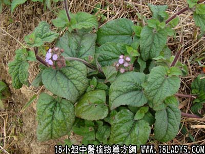

别名：香草。
植物名：芸香。
生长环境：本品为直立、多分枝的草本或亚灌木，为栽培的药用植物，常见于屋前屋后空地或盆栽。
分布：原产于欧洲地中海区，我国南北均有栽培。
入药部分：叶。
采集期：全年。
自采地点：家种。
性味：性凉、味微苦、有香气。
功能：清凉、散毒、凉血。
主治、用量和用法：1、衄血：用鲜叶搓成团，塞鼻孔；2、疮疖：鲜叶适量，加黄糖捣烂，外敷患处；3、牙痛：鲜用5钱、鸡蛋一只，冰糖适量，清水煎服。
验方：（治血热方）臭草、绿豆、片糖，各适量，清水煎服，或煮粥食。
（方解）民间最喜用本方治血热，并作清凉饮料，遇有皮肤热毒、疮疖、热性闭经等，服之多效。臭草有异香，功能凉血；绿豆解毒；片糖甘润解毒。煎水煮粥食，可口有益，诚为上品。令人谓有降血压作用。
（方歌）皮肤生疮血热多，臭草绿豆煲片糖，芳香解毒兼凉血，暑热疮疡服之好。
参考资料：《广州市中医验方第一集》市二人民医院治蛀牙痛验方：臭草4钱、生竹捲心一百条、鸡蛋一只、黄糖适量，煎服。
本文解释权归中药大全，本文地址：https://www.daquan.com/post/1628.html